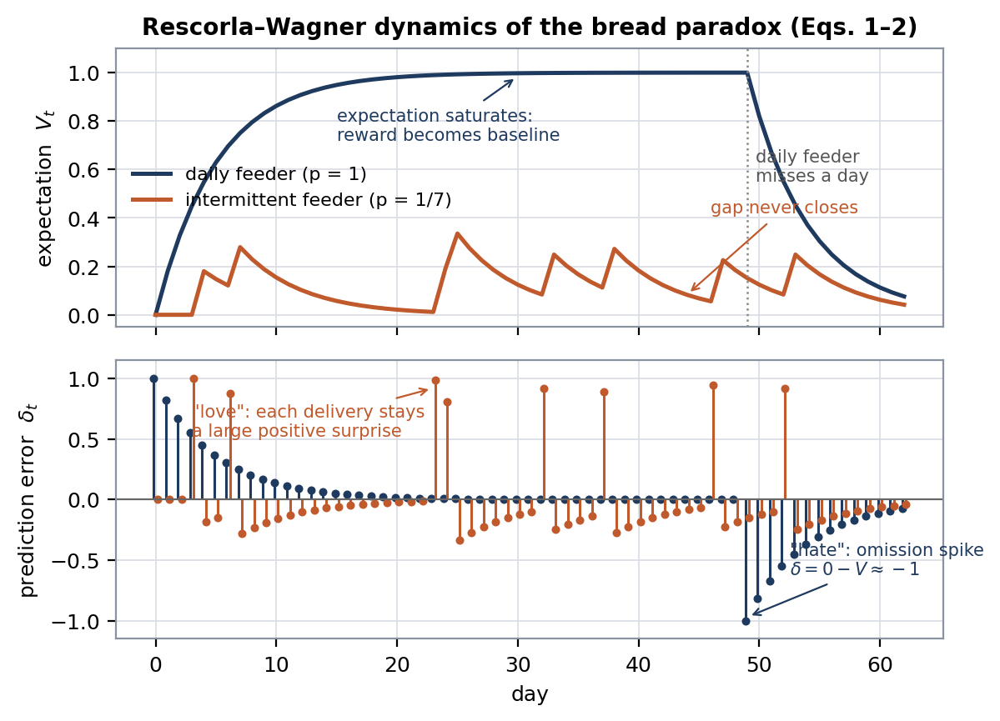
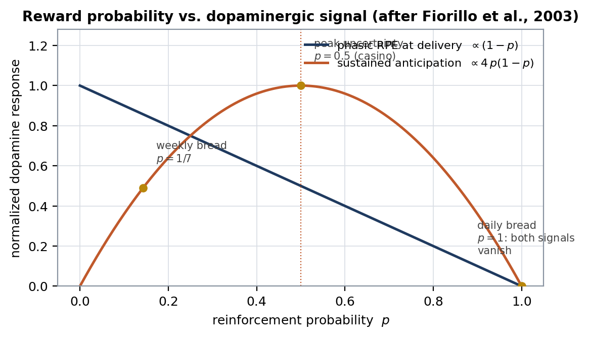
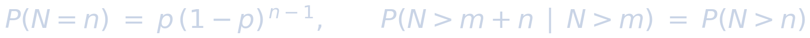
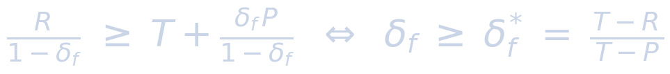
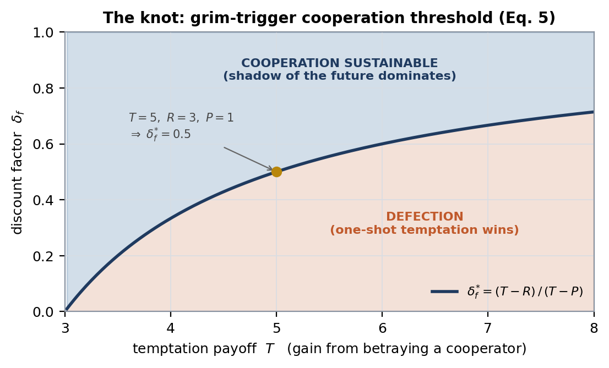
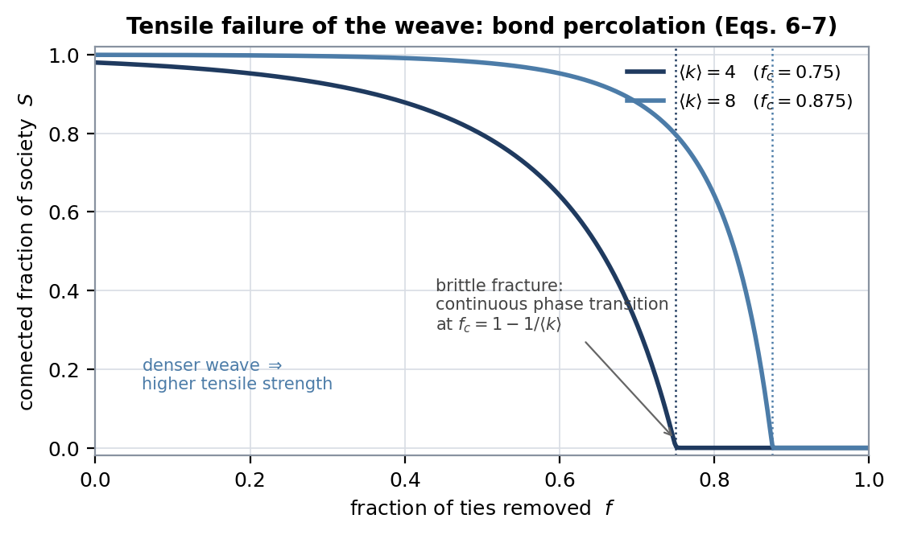
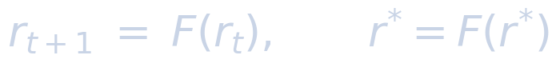
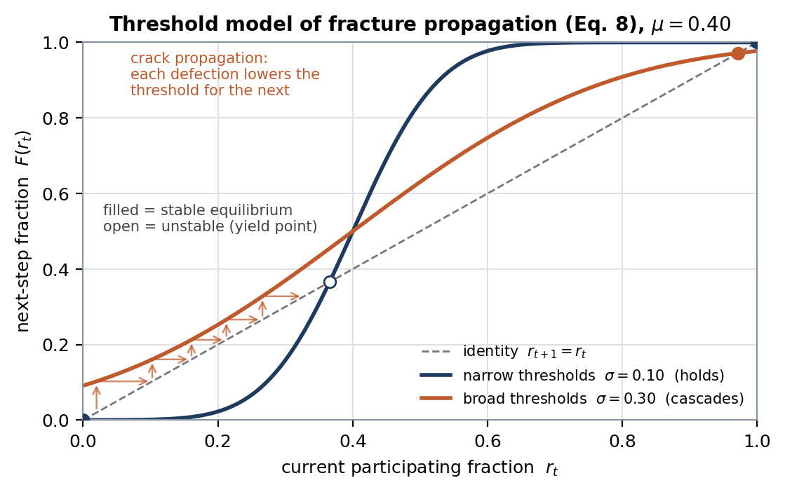
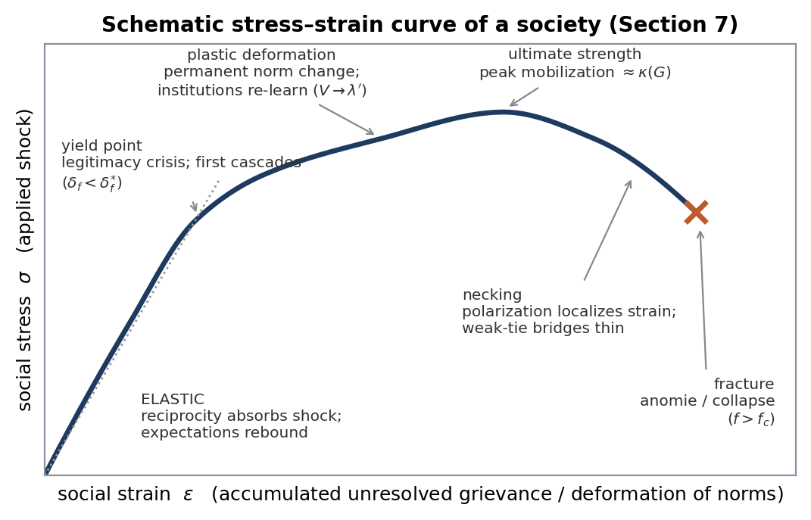
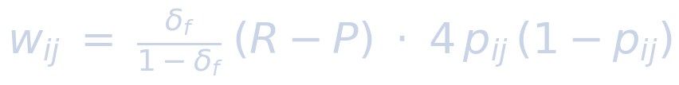

Abstract
A folk observation — feed a person bread every day and they resent you; feed them occasionally and they adore you — sits on top of one of the most precisely quantified results in behavioral neuroscience. This working paper develops that observation into a four-layer formal model of social cohesion, called here the tensile-fabric model. Layer I (the thread) identifies the elementary unit of bonding with the reward-prediction-error signal δ carried by midbrain dopamine neurons: attention and attachment are paid to gaps between expectation and delivery, and gap salience is maximized at intermediate reward probability. Layer II (the knot) uses repeated-game theory to state when a dyadic tie holds: cooperation is sustainable exactly when the discounted shadow of the future outweighs one-shot temptation. Layer III (the weave) imports Granovetter's tie-strength topology, in which weak ties are the cross-threads that turn strong-tie yarns into cloth. Layer IV (tensile strength) quantifies when the cloth tears, using bond percolation, threshold-cascade dynamics, and structural cohesion. A composite quantity Σsoc, the weighted minimum cut over per-tie bond energies, is proposed as a candidate measure of the tensile strength of a society. A materials-science stress–strain mapping and the model's limits close the paper. All mathematical layers are established results with citations; only the composite in Section 8 is original synthesis.
1. Introduction and motivating observation
Deliver an identical loaf of bread to the same person every day and, within weeks, the loaf is invisible; skip one day and you are an enemy. Deliver a loaf at unpredictable intervals and each loaf lands as a gift; you are a benefactor. The asymmetry is ancient enough to be proverbial, but it is not folklore: it is the single-tie limit of a measurable learning law. Partial reinforcement was shown to produce behavior more resistant to extinction than continuous reinforcement as early as 1939 [1], the full taxonomy of reinforcement schedules was mapped by Ferster and Skinner in 1957 [2], and the interpersonal version — esteem that arrives incrementally is valued above esteem that was always there — was demonstrated experimentally by Aronson and Linder in 1965 [3].
The claim developed here is an engineering one. If the gap between expectation and delivery is treated as the elementary fiber of social bonding, then a stack of well-established formalisms assembles those fibers into a load-bearing structure: repeated games knot fibers into ties, network topology weaves ties into fabric, and percolation theory specifies the load at which the fabric tears. Each layer has its own mature literature; the contribution of this paper is the explicit lamination of the four layers into a single stack, a stress–strain reading of the result, and a proposed composite quantity for the tensile strength of a society. The layers are presented bottom-up, in the order a fabric is made: fiber, knot, weave, tested strength.
2. Notation
Table 1 collects the variables used throughout. Layer I variables live at the timescale of single encounters within one nervous system; Layer II at the timescale of a relationship; Layers III–IV at the scale of the population graph.
| Symbol | Meaning | Layer |
|---|---|---|
| V(t) | learned expectation (predicted value) before the event at time t | I |
| R(t), r(t) | reward actually delivered at time t | I |
| δ(t) | reward-prediction error; the gap (Eqs. 1–2) | I |
| α, β | learning-rate parameters (stimulus and reward salience) | I |
| λ | asymptotic associative strength (magnitude of the reward) | I |
| γ | within-agent temporal discount factor (TD learning) | I |
| p | probability of reinforcement per opportunity | I |
| N | opportunities until reinforcement; N ~ Geometric(p) | I |
| U(p) | Bernoulli variance p(1−p): outcome uncertainty / salience | I |
| T, R, P, Sk | Prisoner's-Dilemma payoffs: Temptation > Reward > Punishment > Sucker | II |
| δ_f | between-encounter discount factor: the shadow of the future | II |
| δ_f* | critical discount factor (T−R)/(T−P) (Eq. 5) | II |
| w_ij | tie strength / bond energy of edge (i, j) (Eq. 10) | III |
| ⟨k⟩, ⟨k²⟩ | first and second moments of the degree distribution | III–IV |
| f, q | fraction of ties removed / intact (q = 1−f) | IV |
| S | fraction of the population in the giant connected component | IV |
| f_c | critical removal fraction: the fracture point (Eq. 7) | IV |
| r(t) | fraction of the population participating in a cascade at step t | IV |
| F(·) | cumulative distribution of individual activation thresholds | IV |
| κ(G) | structural cohesion: minimum vertex cut of graph G (Eq. 9) | IV |
| Σ_soc | proposed social tensile strength (Eq. 11) | synthesis |
Table 1. Nomenclature. (The sucker payoff is written Sk to avoid collision with the giant-component fraction S.)
3. Layer I — the thread: prediction-error gaps
3.1 The learning rule
The Rescorla–Wagner rule [4] states that learning is driven not by reward but by surprise: the change in expectation on any trial is proportional to the gap between what the reward supports (λ) and what was already expected (V):
Temporal-difference (TD) learning generalizes the same gap to sequential settings [5], defining the moment-to-moment prediction error
Both equations formalize the intuition sketched on the whiteboard as the gap between desire and comfort: λ (or r) is the desired state, V is the comfortable, already-priced-in state, and δ is the tension in the thread. Figure 1 simulates Eq. 1 for the two feeders. The daily feeder's recipient converges to V ≈ λ, at which point δ → 0: the bread is neurologically silent. One omission then produces δ = 0 − V ≈ −λ, a full-magnitude negative spike — the "hate." The intermittent feeder's recipient never converges; every delivery arrives against a low V and lands as a large positive δ — the "love." The asymmetry of the proverb is exactly the asymmetry of where each schedule parks V.

3.2 The physiological substrate
The gap is not merely a modeling convenience; it is carried by an identified cell population. Schultz, Dayan and Montague showed that phasic firing of midbrain dopamine neurons matches the TD error δ of Eq. 2: unpredicted rewards excite the neurons, fully predicted rewards produce no response, and omission of a predicted reward depresses firing below baseline [6]. Fiorillo, Tobler and Schultz then parameterized reward probability directly and found two distinct signals [7]: a phasic response at delivery that scales with the improbability of the reward (∝ 1−p), and a sustained anticipatory ramp that tracks uncertainty, maximal at p = 0.5 and vanishing at p = 0 and p = 1. Uncertainty here is simply the variance of a Bernoulli outcome:
Figure 2 plots both signals. The daily feeder operates at p = 1, where both signals are zero; the weekly feeder operates at p ≈ 0.14 on the rising limb of the uncertainty parabola; commercial gambling and algorithmic feeds engineer p toward the 0.5 peak. One caution is owed to the layer's limits: controlled rodent work has not supported the strong claim that variable-ratio scheduling alone induces pathological gambling, implicating brain chemistry and context alongside the schedule [8]. The schedule sets salience; it does not by itself set pathology.

3.3 Memorylessness and the impossibility of quitting
Under a variable-ratio schedule with per-opportunity probability p, the number of opportunities until the next reinforcement is geometric:

(3)The geometric distribution is the unique memoryless discrete distribution: the conditional probability of reward on the next attempt is p regardless of how many attempts have failed. There is therefore never a statistically rational moment at which continued responding becomes less promising than it was at the start — the formal root of the extinction resistance measured in [1, 2]. A fixed daily schedule is the opposite limit: a delta function at 24-hour intervals whose single missed pulse falsifies the entire learned model at once. Layer I's output, carried upward, is a per-tie salience factor g(p) = 4p(1−p): the degree to which a relationship's exchanges remain neurologically alive rather than priced in.
4. Layer II — the knot: repeated games and the shadow of the future
A live thread is not yet a bond; it must be knotted by reciprocity. Model a tie as an indefinitely repeated Prisoner's Dilemma with stage payoffs T > R > P > Sk (temptation, mutual reward, mutual punishment, sucker) and a probability-weighted discount factor δ_f per encounter — the value each party places on the next round, i.e. the expected continuation of the relationship. Under the grim-trigger strategy (cooperate until betrayed, then punish forever), cooperation is an equilibrium exactly when the discounted stream of mutual reward beats a one-shot betrayal followed by permanent punishment [9]:

(5)The folk theorems generalize the point: with sufficiently patient players (δ_f → 1), essentially any individually rational cooperative outcome is sustainable in equilibrium [10]. Axelrod's tournaments gave the condition its name — cooperation survives when the shadow of the future is long [11]. Figure 3 draws the boundary of Eq. 5. The knot and the thread are complementary, not redundant: Layer I sets how much each encounter is felt (salience), Layer II sets whether the encounter stream is expected to continue (tension). A tie can fail either way — by becoming so predictable it is no longer felt (thread goes slack, δ → 0) or by losing its future (knot slips, δ_f < δ_f*). "The other must play" — as the whiteboard puts it — is precisely the δ_f term: anticipation of the counterparty's next move is what keeps the knot loaded.

5. Layer III — the weave: topology of strong and weak ties
Knotted threads become fabric only through a weave, and the weave has a known architecture. Granovetter defined the strength of a tie as a combination of time, emotional intensity, intimacy and reciprocal services [12], and derived a structural consequence now standard in network science: strong ties close triangles (one's close friends know each other), so strong-tie subgraphs form dense, redundant clumps; the ties that bridge between clumps are disproportionately weak ties. Removing a strong tie rarely changes global connectivity — its endpoints remain linked through shared neighbors — while removing weak ties disconnects communities from one another. In textile terms: strong ties are the fibers twisted into local yarns; weak ties are the cross-threads that make the yarns into cloth rather than a heap of rope. A society optimized only for strong ties is a bundle of unconnected cords — high local cohesion, no macroscopic tensile strength. Layer III's output is the weighted graph G(V, E, w) on which Layer IV's failure analysis runs.
6. Layer IV — tensile strength: percolation, cascades, and cohesion
6.1 When does the fabric hold together at all?
The macroscopic analog of "holding together" is the existence of a giant connected component. For an Erdős–Rényi random graph with mean degree ⟨k⟩ in which a fraction q of ties survives, the giant-component fraction S solves the self-consistency condition [13]
with S > 0 only when ⟨k⟩q > 1. For arbitrary degree distributions the Molloy–Reed criterion governs [14], and the critical fraction of removed ties at which the network fragments — the fracture strain of the fabric — follows [15]:
Figure 4 plots Eq. 6 as ties are removed. Two engineering readings follow. First, the transition is continuous but sharp: a society can shed a large fraction of its ties with modest visible damage and then disintegrate over a narrow additional interval — brittle failure without much warning. Second, f_c rises with density and, per Eq. 7, with degree heterogeneity: hubs and redundant weak-tie bridges are reinforcement mesh. (The same heterogeneity makes the fabric acutely vulnerable to targeted removal of hubs [15] — a designed attack, unlike the random fatigue plotted here.)

6.2 How the crack propagates
Percolation describes the static failure envelope; the dynamics of tearing are threshold cascades. In Granovetter's riot model each individual defects once the participating fraction exceeds a personal threshold; if F is the cumulative distribution of thresholds, participation evolves by iteration toward a fixed point [16]:

(8)Figure 5 shows the celebrated instability: with a narrow threshold distribution the origin is a stable equilibrium and order holds, while a modest widening of the same-mean distribution creates a path from r = 0 to near-universal participation — each defection lowers the effective threshold of the next actor, the social equivalent of stress concentration at a crack tip. Watts generalized the mechanism to sparse networks and located a "cascade window" in which a vanishingly small seed can flip a macroscopic fraction of the graph [17]. The engineering moral is uncomfortable but familiar from fracture mechanics: global collapse is governed less by the average member than by the tail of the threshold distribution and the connectivity of the first flaw.

6.3 Structural cohesion as measured redundancy
Sociology already maintains a load-rating for the weave. Moody and White define the structural cohesion of a group as the minimum number of members whose removal disconnects it [18] — by Menger's theorem, equal to the number of vertex-independent paths joining every pair:
This is redundancy engineering stated in graph theory: a structure rated κ = 1 has single points of failure; higher κ means load paths around any local break. Moody and White further show empirically that cohesion is nested — highly cohesive cores sit inside larger, less cohesive shells — which is exactly the laminate architecture a structural engineer would specify for damage tolerance.
Feel the failure modes → The interactive fragility map runs Eqs. 8–10 as a live membrane: press in gravity wells, tear ties, polarize the bridges, and watch S collapse past f_c. Anomie is a slider.7. The stress–strain curve of a society
The four layers compose into a materials analogy that is more than decorative, because each regime of a stress–strain curve maps onto a governing equation from a different layer. Table 2 states the mapping and Figure 6 draws the schematic. One regime deserves emphasis: Durkheim's anomie [19] — the normlessness he identified when regulation and expectation dissolve — is not the fracture at the end of the curve but a loss of modulus: λ becomes undefined, V collapses, and threads go slack before any external load is applied. A society can therefore fail in two distinct modes: overload (stress exceeds tensile strength, Sections 6.1–6.2) and loss of pre-tension (nothing is expected of anyone, so no gap, no salience, no knot — the fabric unravels at zero load).

| Material regime | Mechanical meaning | Societal analog | Governing math |
|---|---|---|---|
| Elastic region | Reversible strain; Hooke's law | Reciprocity absorbs shocks; expectations rebound | δ small; r* = 0 stable in Eq. 8 |
| Yield point | Onset of permanent deformation | Legitimacy crisis; first defection cascades | δ_f drops below δ_f* (Eq. 5); unstable fixed point of Eq. 8 |
| Plastic region | Permanent rearrangement; strain hardening | Institutional reform; norms re-learned around new λ | V re-converges via Eq. 1 toward λ′ |
| Ultimate strength | Maximum stress the specimen bears | Peak mobilization / solidarity capacity | κ(G) and ⟨k²⟩/⟨k⟩ maximal (Eqs. 7, 9) |
| Necking | Strain localizes at a thinning cross-section | Polarization; weak-tie bridges thin and load concentrates | bridge removal drives κ_MR → 2 (Eq. 7) |
| Fracture | Separation of the specimen | Fragmentation, secession, collapse | f > f_c; S → 0 (Eqs. 6–7) |
| Loss of modulus | Material creeps; no restoring force | Anomie: expectations undefined, ties slack [19] | λ undefined ⇒ δ ≡ 0; g(p) → 0 |
Table 2. Stress–strain mapping between material failure regimes and societal regimes, with the governing equation of each.
8. A proposed composite quantity (original synthesis)
Everything above Section 8 is established literature. This section is the paper's speculative step and should be read as a proposal, not a result. Define the bond energy of tie (i, j) as the product of its Layer-II tension — the discounted cooperation surplus protecting the knot — and its Layer-I salience — how alive the exchange remains:

(10)and define the tensile strength of the society as the weighted minimum cut of the resulting graph — the least total bond energy that must be severed to separate the population into disconnected blocks:
where the minimum runs over every edge cut C that separates G into disconnected blocks. Three testable implications fall out. First, a fully "solved" society — every exchange contractually guaranteed, p → 1 everywhere — satisfies every Layer-II condition yet drives every w_ij to zero through the salience term: perfect predictability is a slack fabric, which is the bread paradox restated at civilizational scale. Second, Σ_soc inherits percolation's density dependence: interventions that raise ⟨k⟩ or bridge redundancy raise the fracture strain roughly linearly (Fig. 4). Third, because minimum cuts run through weak-tie bridges, polarization — the selective decay of exactly those bridges — collapses Σ_soc far faster than uniform social decay of the same total magnitude, consistent with the targeted-attack results of [15].
9. Limitations and scope
Four boundaries are stated plainly. (i) Level-mixing is a modeling choice, not a derivation. Nothing in [6, 7] entails Eq. 10; carrying a neuron-level signal into a macrosocial weight is an analogy made quantitative, and it may fail empirically. (ii) "Society," not "reality." The whiteboard's stronger claim — that the gap-to-game fabric constitutes the tensile strength of reality — is poetry as far as this stack reaches; every equation here quantifies coordination among agents, not physics. (iii) Parameters are illustrative. No figure in this paper is fitted to data; p, δ_f, ⟨k⟩ and threshold distributions were chosen for legibility. (iv) The mechanism is exploitable, and known to be. Variable-reward scheduling is the documented design basis of gambling products and engagement-optimized feeds; the same mathematics that explains cohesion is a manual for manufacturing compulsion, and rodent evidence cautions that schedule alone does not determine pathology [8]. An engineer publishing load tables for a material accepts an obligation to note which failure modes they enable.
10. Conclusion
A proverb about bread compresses a four-layer architecture. The gap between expectation and delivery is a measurable neural signal (Eqs. 1–4) whose salience peaks under uncertainty; repeated-game theory states when that signal's carrier — a reciprocal tie — holds against temptation (Eq. 5); tie topology weaves dyads into a fabric whose bridges are its weak ties; and percolation, cascade and cohesion theory rate the fabric's tensile strength and predict its two failure modes — brittle fracture under overload, and slack-thread unraveling under perfect predictability (Eqs. 6–9). The composite Σ_soc of Eq. 11 is offered as a falsifiable summary of the stack: a society's strength is the least bond energy that must be cut to pull it apart, and bond energy requires both a future worth protecting and a present that still surprises.
References
- Humphreys, L. G. (1939). The effect of random alternation of reinforcement on the acquisition and extinction of conditioned eyelid reactions. Journal of Experimental Psychology, 25(2), 141–158. doi:10.1037/h0058138
- Ferster, C. B., & Skinner, B. F. (1957). Schedules of Reinforcement. New York: Appleton-Century-Crofts. Full text
- Aronson, E., & Linder, D. (1965). Gain and loss of esteem as determinants of interpersonal attractiveness. Journal of Experimental Social Psychology, 1(2), 156–171. doi:10.1016/0022-1031(65)90043-0
- Rescorla, R. A., & Wagner, A. R. (1972). A theory of Pavlovian conditioning: Variations in the effectiveness of reinforcement and nonreinforcement. In A. H. Black & W. F. Prokasy (Eds.), Classical Conditioning II: Current Research and Theory (pp. 64–99). New York: Appleton-Century-Crofts.
- Sutton, R. S., & Barto, A. G. (2018). Reinforcement Learning: An Introduction (2nd ed.). Cambridge, MA: MIT Press.
- Schultz, W., Dayan, P., & Montague, P. R. (1997). A neural substrate of prediction and reward. Science, 275(5306), 1593–1599. doi:10.1126/science.275.5306.1593
- Fiorillo, C. D., Tobler, P. N., & Schultz, W. (2003). Discrete coding of reward probability and uncertainty by dopamine neurons. Science, 299(5614), 1898–1902. doi:10.1126/science.1077349
- Laskowski, C. S., Dorchak, D. L., Ward, K. M., Christensen, D. R., & Euston, D. R. (2019). Can slot-machine reward schedules induce gambling addiction in rats? Journal of Gambling Studies, 35, 887–914. doi:10.1007/s10899-019-09852-1
- Friedman, J. W. (1971). A non-cooperative equilibrium for supergames. Review of Economic Studies, 38(1), 1–12. doi:10.2307/2296617
- Fudenberg, D., & Maskin, E. (1986). The folk theorem in repeated games with discounting or with incomplete information. Econometrica, 54(3), 533–554. doi:10.2307/1911307
- Axelrod, R. (1984). The Evolution of Cooperation. New York: Basic Books. (See also Axelrod, R., & Hamilton, W. D. (1981). The evolution of cooperation. Science, 211, 1390–1396.)
- Granovetter, M. S. (1973). The strength of weak ties. American Journal of Sociology, 78(6), 1360–1380. doi:10.1086/225469
- Erdős, P., & Rényi, A. (1960). On the evolution of random graphs. Publications of the Mathematical Institute of the Hungarian Academy of Sciences, 5, 17–61.
- Molloy, M., & Reed, B. (1995). A critical point for random graphs with a given degree sequence. Random Structures & Algorithms, 6(2–3), 161–180. doi:10.1002/rsa.3240060204
- Cohen, R., Erez, K., ben-Avraham, D., & Havlin, S. (2000). Resilience of the Internet to random breakdowns. Physical Review Letters, 85(21), 4626–4628. doi:10.1103/PhysRevLett.85.4626
- Granovetter, M. (1978). Threshold models of collective behavior. American Journal of Sociology, 83(6), 1420–1443. doi:10.1086/226707
- Watts, D. J. (2002). A simple model of global cascades on random networks. Proceedings of the National Academy of Sciences, 99(9), 5766–5771. doi:10.1073/pnas.082090499
- Moody, J., & White, D. R. (2003). Structural cohesion and embeddedness: A hierarchical concept of social groups. American Sociological Review, 68(1), 103–127. doi:10.2307/3088904
- Durkheim, É. (1897/1951). Suicide: A Study in Sociology (J. A. Spaulding & G. Simpson, Trans.). Glencoe, IL: Free Press.